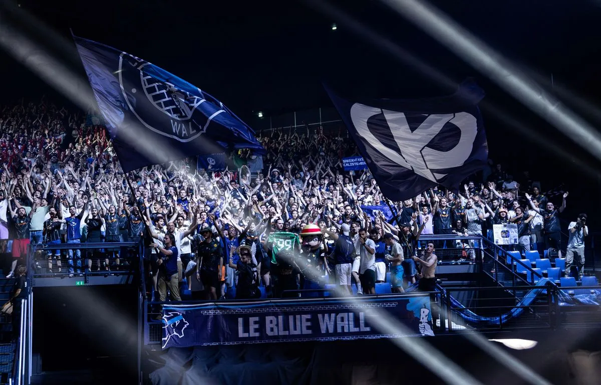
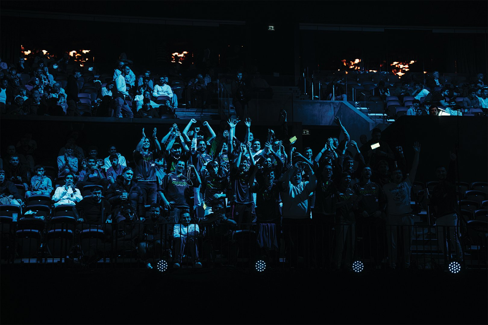
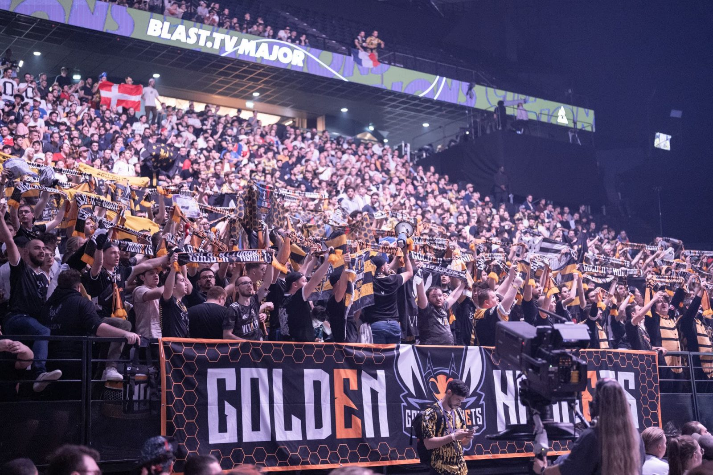

KARMINE CORP
La Karmine Corp (KC) est une structure d'esport dynamique et en constante évolution, ayant vu le jour le 30 mars 2020 sous le nom de Kameto Korp. Fondée par le charismatique duo de streamers francophones Kameto et Kotei et enrichie par l'arrivée de Prime le 16 novembre 2020, la Karmine Corp s'est imposée comme une référence dans le monde de l'esport. Sous la présidence de Kameto et la direction éclairée de Prime, la Karmine Korp s'est engagée dans une multitude de jeux, devenant une force majeure sur la scène compétitive. Parmi les titres où elle excelle figurent League of Legends, TrackMania, Teamfight Tactics, Rocket League, Valorant, Super Smash Bros Ultimate. Les joueurs talentueux de la Karmine ont déjà accumulé de nombreux titres et jouissent d'une renommée mondiale, certains étant reconnus comme les meilleurs joueurs du monde dans leur jeu de prédilection. La Karmine Korp incarne l'excellence et l'ambition dans le monde de l'esport, continuant de fasciner et d'inspirer la communauté gaming à travers le globe.
DétailsGENTLES MATES
Gentle Mates (M8) est une équipe d'esport qui a vu le jour au début de l'année 2023 sous le nom de SBG (Supra Beaux Gosses). Les fondateurs de l'organisation étaient initialement inconnus, mais les fans ont mené des enquêtes approfondies pour dévoiler les visages derrière ce mystérieux projet. Ils ont ainsi découvert que les cerveaux derrière Gentle Mates étaient nul autre que les célèbres Squeezie (S), Brawks (B), et Gotaga (G). En avril 2023, ces trois célèbres youtubers/streamers ont surpris la communauté en annonçant la création officielle de l'équipe d'esport Gentle Mates, conservant les mêmes joueurs. Cette annonce a marqué la transition de l'équipe SBG vers la nouvelle identité de Gentle Mates. La particularité de cette équipe est que tous les joueurs se sont rencontrés seulement quelques jours avant leur première compétition. Ces joueurs talentueux étaient sans équipe, ayant été évincés de leurs anciennes formations, mais ont été chaleureusement accueillis par Gentle Mates. En constante expansion, Gentle Mates possède actuellement une équipe sur Valorant avec des projets ambitieux pour élargir sa présence à d'autres jeux, tels que Rocket League, League of Legends, et Team Fight Tactics. L'équipe incarne la spontanéité et l'ambition, laissant entrevoir un avenir prometteur dans l'univers de l'esport.
DétailsVITALITY
Vitality est une structure emblématique de l'esport, elle a été créée en 2013 par les légendaires Néo, Gotaga et Brawks. L'histoire de Vitality a débuté avec une spécialisation dans le jeu Call Of Duty, mais au fil des ans, l'organisation s'est diversifiée pour conquérir d'autres titres, devenant l'une des équipes les plus polyvalentes de l'esport. Vitality a élargi son influence à des jeux tels que FIFA, Rainbow Six Siege, League of Legends, Rocket League, Counter-Strike et bien d'autres, accumulant un palmarès impressionnant et une base de fans dévouée. Cependant, malgré cette expansion fructueuse, l'équipe a pris la décision difficile d'annuler son équipe sur Fortnite en raison de la rentabilité décroissante du jeu par rapport aux prix des joueurs. En fin d'année 2021, la scène de l'esport a été secouée par l'annonce du départ de deux des fondateurs de Vitality, Gotaga et Brawks, laissant Néo à la barre de cette structure emblématique.
Détails